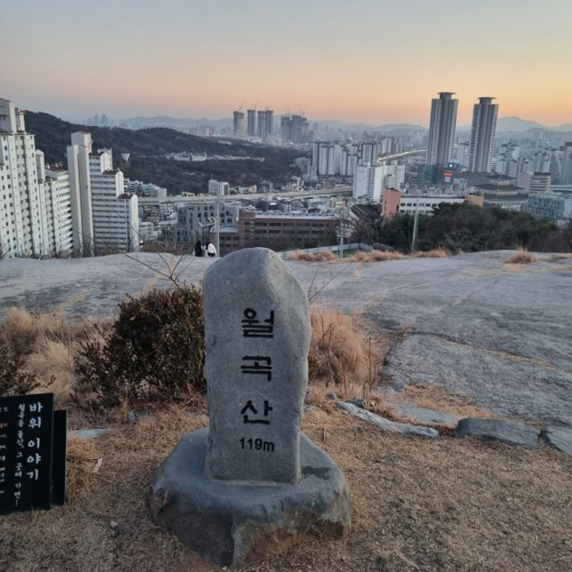

만해한용운심우장
서울특별시 성북구 성북동에 있는 만해 한용운의 유택. 사적이다.

한국가구박물관
유퀴즈 방탄 찰영 장소라는 이곳 예약필수로 전통을 체험해 볼수 있다는 이곳

오동공원(월곡산)
119m의 낮은 산이지만 야경이 좋다는 이곳 가벼운 운동코스로 인기많다

북적마을
성북동에 위치한 마을로서 오래된 골목길의 정취를 즐길 수 있을뿐만 아니라 젊은 예술가들이 모여 살고 있는 곳
성북구 맛집

성북동빵공장
서울 성북구 대사관로 40 B동
좋은분위기와 좋은재료를 쓴다는빵

카레
서울특별시 성북구 성북로 62-1
향신료 카레점

수아당
서울특별시 성북구 동소문로20가길 33 1F
다양한 재료랑 가득찬김밥

우정초밥
서울특별시 성북구 종암로3길 31 1F
오마카세다란 느낌을 받는다는 초밥집